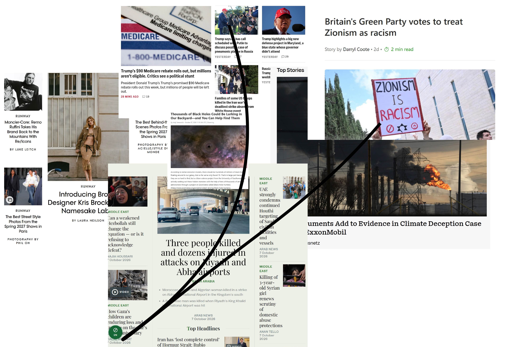

A clock: An argument can be made about how we read, view time. It is continuously moving without the slightest bit of our control. A universal currency in my belief. You can not turn it back, it does not accept refunds, but exchanges can be possible, if you use your time correctly. In the metropolitan a millisecond counts for 20 million lives, with 20 million notifications and that is only counting a specific geographic area and a singular app. There is no stopping time as it roams around, yet time has the ability to show its possibilities as it grows, teaches and functions. I wanted to dive into 360 degrees of motion. How fast can we rotate around? How can particles and cell life travel in a millisecond, while we can only take a sip of breath? I wanted to capture a classic interruption of a millisecond of planets forming and expanding, stars dying and the ones who are reborn. What light flashes at the end? I am experimenting as I go and figuring out further details to touch base on. The first edition. .
